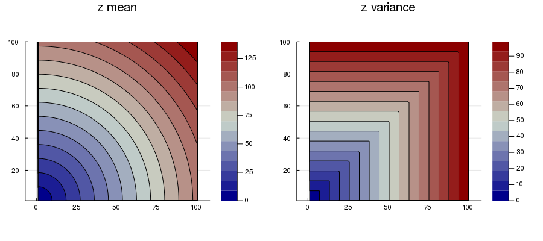
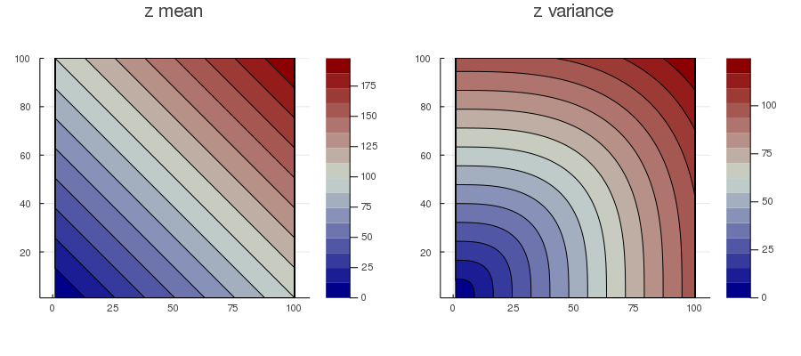
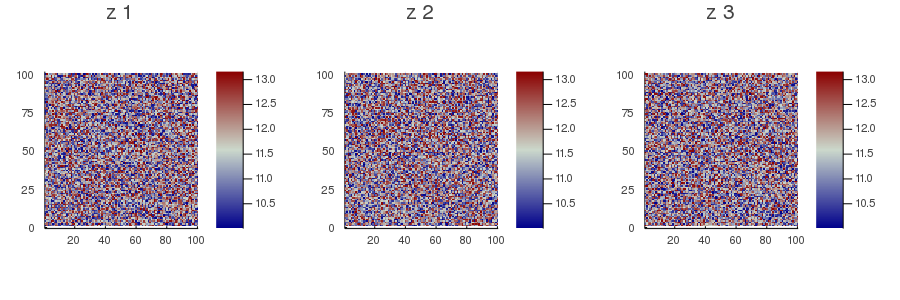

Writing solvers
Below are examples of solvers written with the framework.
Estimation solver example
An estimation solver that, for each location of the domain, assigns the 2-norm of the coordinates as the mean and the ∞-norm as the variance.
using GeoStatsBase
using LinearAlgebra: norm
# implement method for new solver
import GeoStatsBase: solve
@estimsolver NormSolver begin
@param pmean = 2
@param pvar = Inf
end
function solve(problem::EstimationProblem, solver::NormSolver)
pdomain = domain(problem)
# results for each variable
μs = []; σs = []
for (var,V) in variables(problem)
# get user parameters
if var in keys(solver.params)
varparams = solver.params[var]
else
varparams = NormSolverParam()
end
# allocate memory for result
varμ = Vector{V}(undef, npoints(pdomain))
varσ = Vector{V}(undef, npoints(pdomain))
for location in LinearPath(pdomain)
x = coordinates(pdomain, location)
varμ[location] = norm(x, varparams.pmean)
varσ[location] = norm(x, varparams.pvar)
end
push!(μs, var => varμ)
push!(σs, var => varσ)
end
EstimationSolution(pdomain, Dict(μs), Dict(σs))
end;solve (generic function with 6 methods)We can test the newly defined solver on an estimation problem:
using GeoStats
using Plots
# dummy spatial data with a single point and no value
sdata = PointSetData(Dict(:z => [NaN]), reshape([0.,0.], 2, 1))
# estimate on a regular grid
sdomain = RegularGrid{Float64}(100, 100)
# the problem to be solved
problem = EstimationProblem(sdata, sdomain, :z)
# our new solver
solver = NormSolver()
solution = solve(problem, solver)
contourf(solution)
And assess the behavior of different parameters:
solver = NormSolver(:z => (pmean=1,pvar=3))
solution = solve(problem, solver)
contourf(solution)
Simulation solver example
A simulation solver that, for each location of the domain, assigns a random sample from a Gaussian distribution.
using GeoStatsBase
# implement method for new solver
import GeoStatsBase: solve_single
@simsolver RandSolver begin
@param mean = 0
@param var = 1
end
function solve_single(problem::SimulationProblem, var::Symbol,
solver::RandSolver, preproc)
pdomain = domain(problem)
# retrieve solver parameters
varparams = solver.params[var]
μ, σ² = varparams.mean, varparams.var
# i.i.d. samples ~ Normal(0,1)
z = rand(npoints(pdomain))
# rescale and return
μ .+ sqrt(σ²) .* z
end;solve_single (generic function with 4 methods)We can test the newly defined solver in a simulation problem:
using GeoStats
using Plots
# simulate on a regular grid
sdomain = RegularGrid{Float64}(100, 100)
# the problem to be solved
problem = SimulationProblem(sdomain, :z => Float64, 3)
# our new solver
solver = RandSolver(:z => (mean=10.,var=10.))
solution = solve(problem, solver)
heatmap(solution)
Note, however, that we did not define the preprocess function for the solver. This function can be used to avoid recalculations for each realization, and to set default parameters for variables that are not explicitly set by users in the solver constructor:
import GeoStatsBase: preprocess
function preprocess(problem::SimulationProblem, solver::RandSolver)
# result of preprocessing
preproc = Dict{Symbol,NamedTuple}()
for (varname, V) in variables(problem)
if varname ∈ keys(solver.params)
# get user parameters
varparams = solver.params[varname]
else
# set default parameters
varparams = RandSolverParam()
end
preproc[varname] = (mean=varparams.mean, var=varparams.var)
end
preproc
end;preprocess (generic function with 5 methods)We can call the preprocess function on problems with multiple variables to check that the solver is producing default values for variables other than the one passed during construction:
problem = SimulationProblem(sdomain, (:z=>Float64, :w=>Float64), 3)
preprocess(problem, solver)Dict{Symbol,NamedTuple} with 2 entries:
:w => (mean = 0, var = 1)
:z => (mean = 10.0, var = 10.0)This preproc output is passed by GeoStats.jl as the last argument to the solve_single function, which could be reimplemented as follows:
function solve_single(problem::SimulationProblem, var::Symbol,
solver::RandSolver, preproc)
pdomain = domain(problem)
# retrieve solver parameters
μ, σ² = preproc[var]
# i.i.d. samples ~ Normal(0,1)
z = rand(npoints(pdomain))
# rescale and return
μ .+ sqrt(σ²) .* z
end;solve_single (generic function with 4 methods)Learning solver example
TODO